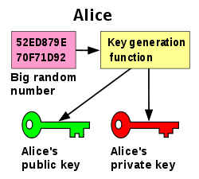
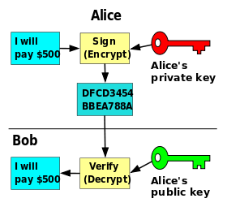

Cryptography
Cryptography is a method of protecting data and communications using codes and digital keys to ensure that the information is delivered untampered to the intended sender for further processing.

Juan Moreno
April 03, 2023
Cryptography is a method of protecting data and communications using codes and digital keys to ensure that the information is delivered untampered to the intended sender for further processing.
A digital signature is a cryptographic means through which one can verify a document’s origin, the sender’s identity, the time, and date a document was signed or sent, etc.

As cryptography operates with data, this can be either in plaintext (cleartext) or ciphertext (cryptogram).
Plaintext data means that the message is in natural format, readable to an attacker. Ciphertext data means that the message is in an unreadable format to the attacker but readable to the intended recipient.
You can convert the message from plaintext to ciphertext using the process of encryption. Similarly, you can convert ciphertext into plaintext via decryption by using a cryptographic algorithm and key used to make the original message.
Symmetric or shared key encryption is a method where both parties share a key, kept secret by both parties. For example, sender A can encrypt a message with a shared key, then receiver B can decrypt the encrypted message only with that key.

Asymmetrical encryption uses a pair of mathematical related keys, one for encryption and the other for decryption. With public key cryptography, a user has a pair of public and private keys.
Keys: These are generated using a large prime number and a key function. The keys are related mathematically, but cannot be derived from one another.

With these keys we can encrypt messages. For example, if Bob wants to send a message to Alice, he can encrypt a message using her public key. Alice can then decrypt this message using her private key. Only Alice can decrypt this message as she is the only one with the private key.

Messages can also be signed. This allows you to ensure the authenticity of the message. If Alice wants to send a message to Bob, and Bob wants to be sure that it is from Alice, Alice can sign the message using her private key. Bob can then verify that the message is from Alice by using her public key.

openssl but which is not part of JDK.keytool to manage keys and certificates and
store them in a keystore.keytool command allows us to create self-signed
certificates and show information about the keystore# Generate test certificate
keytool -genkeypair -alias alice -keyalg RSA -keysize 2048 -dname "cn=CN, ou=OU, o=O, c=C" -validity 730 -storetype pkcs12 -keystore alice.p12 -keypass alice -storepass alice -v
# Export public key
keytool -export -rfc -keystore alice.pfx -alias alice -file alice.pem
# Show certificate info
keytool -list -v -srcstoretype pkcs12 -J-Duser.language=en -keystore alice.p12
# Create truststore
keytool -import -file alice.crt -alias alice -srcstoretype pkcs12 -keystore alice_trust.pfx -J-Duser.language=en
# Convert PEM (pem/txt) to crt x509 (binary)
openssl x509 -inform PEM -in test_certificate.pem -out test_certificate.crt -outform DER
# Convert crt x509 (binary) to cer (pem/txt)
openssl x509 -inform DER -in certificate.cer -out certificate.pem
# Show certificate PEM info
openssl x509 -in certificate.pem -textSpring Boot makes it easy to create stand-alone, production-grade Spring based Applications that you can “just run”.
To integrate CXF with Spring boot we need to add the following dependencies: spring-boot-starter-web,cxf-spring-boot-starter-jaxws, cxf-rt-transports-http, cxf-rt-ws-security and cxf-rt-features-logging.
@Configuration class a @Bean
with the client implementation. It’s the interface with the annotation
@WebService.@WebServiceClient.JaxWsProxyFactoryBean for the client
class.If the WSDL already exists, follow the WSDL-first steps plus:
@Configuration class an
javax.xml.ws.Endpoint implementation. It’s the interface
with the annotation @WebService.Web Services Security (WS-Security, WSS) is an extension to SOAP to apply security to Web services.
Through a number of standards such as XML-Encryption, and headers defined in the WS-Security standard, it allows us to:
We’ll cover the first three items using certificates. CXF relies on Apache WSS4J™ in large part to implement WS-Security.
To enable WS-Security within CXF for a server or a client, you’ll need to set up the WSS4J interceptors.
import org.apache.cxf.ws.security.wss4j.WSS4JInInterceptor;
import org.apache.cxf.ws.security.wss4j.WSS4JOutInterceptor;
...
Map<String,Object> inProps = new HashMap<String,Object>();
... // how to configure the properties is outlined below;
WSS4JInInterceptor wssIn = new WSS4JInInterceptor(inProps);
cxfEndpoint.getInInterceptors().add(wssIn);
Map<String,Object> outProps = new HashMap<String,Object>();
... // how to configure the properties is outlined below;
WSS4JOutInterceptor wssOut = new WSS4JOutInterceptor(outProps);
cxfEndpoint.getOutInterceptors().add(wssOut);The X.509 Certificate Token Profile provides another option for implementing WS-Security. For the Signature and Encryption actions, we’ll need to create a public & private key for the entities involved. We can generate a self-signed key pair for our development environment. Keep in mind these will not be signed by an external authority like Verisign, so are inappropriate for production use.
On the client side, our outgoing WS-Security properties will look like so:
outProps.put(WSHandlerConstants.ACTION, "Signature");
outProps.put(WSHandlerConstants.USER, "myAlias");
outProps.put(WSHandlerConstants.PW_CALLBACK_CLASS,
ClientCallbackHandler.class.getName());
outProps.put(WSHandlerConstants.SIG_PROP_FILE, "client_sign.properties");The USER that is specified is the key alias for the client. The password callback class is responsible for providing that key’s password. For X.509 support you will normally have multiple actions, e.g. Encryption with Signature. For these cases, just space-separate the actions in the ACTION property as follows:
outProps.put(WSHandlerConstants.ACTION, WSHandlerConstants.TIMESTAMP + " " + WSHandlerConstants.SIGNATURE + " " + WSHandlerConstants.ENCRYPT);
Our client_sign.properties file contains several settings to configure WSS4J:
org.apache.ws.security.crypto.provider=org.apache.ws.security.components.crypto.Merlin
org.apache.ws.security.crypto.merlin.keystore.type=jks
org.apache.ws.security.crypto.merlin.keystore.password=keyStorePassword
org.apache.ws.security.crypto.merlin.keystore.alias=myAlias
org.apache.ws.security.crypto.merlin.keystore.file=client_keystore.jksOn the server side, we need to configure our incoming WSS4J interceptor to verify the signature using the Client’s public key.
inProps.put(WSHandlerConstants.ACTION, "Signature");
inProps.put(WSHandlerConstants.SIG_PROP_FILE, "server.properties");Our server_sign.properties file contains several settings to configure WSS4J:
Encryption involves the sender encrypting the message with the recipient’s public key to ensure that only the recipient can read the message (only the recipient has its own private key, necessary for decrypting the message.) This requires the sender to have the recipient’s public key in its keystore.
The process for encrypting is very similar to and indeed usually combined with the signature one.
@SpringBootTest and
MockServer.